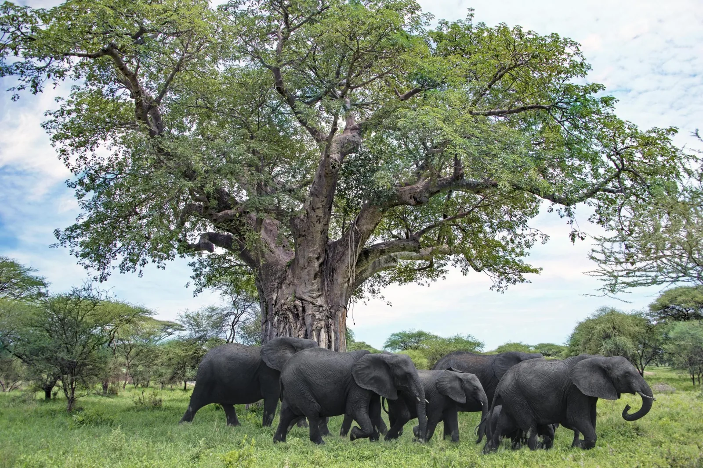
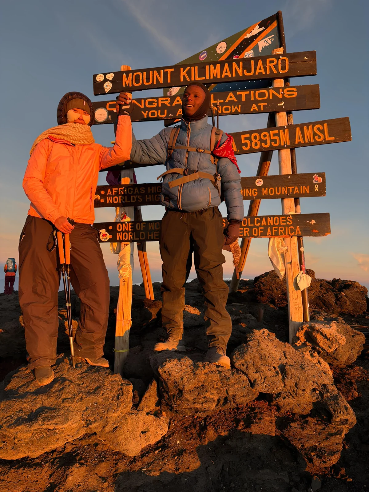
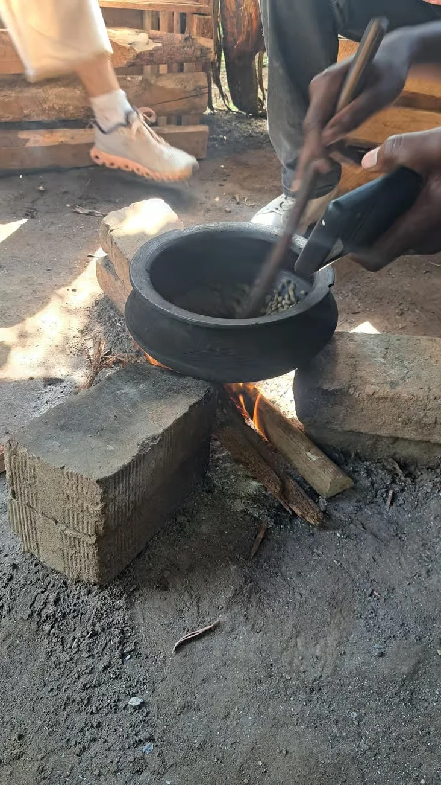
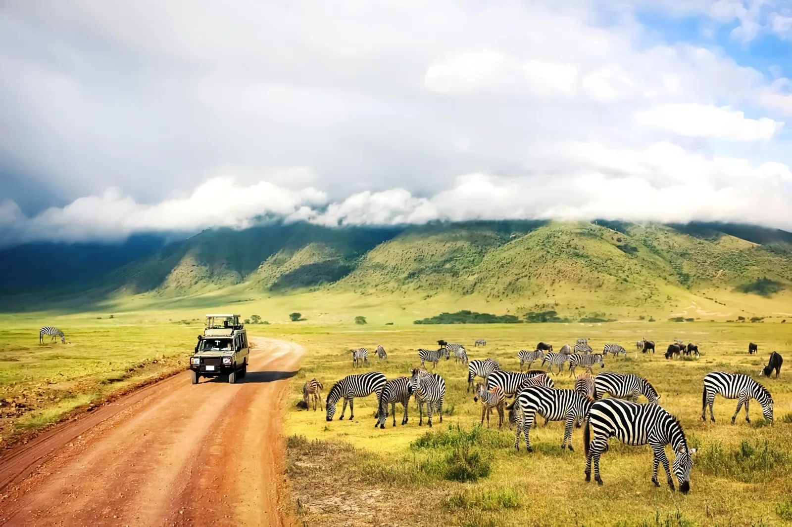
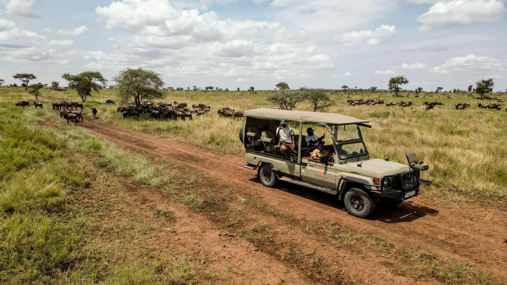
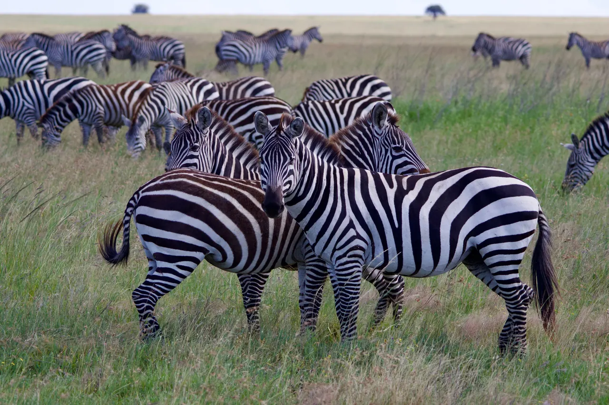

01 / WILDLIFE SAFARISTanzania safaris
Private game drives in Tarangire, Ngorongoro and the Serengeti, with camping and lodge options.
Compare safari itineraries
KILIMANJARO · SAFARI · ZANZIBAR
Mountain treks, private safaris and island experiences.
Planned with local knowledge, around your dates and your pace.
YOUR JOURNEY STARTS HEREFrom mountain trails to the Indian Ocean.
EXPLORE TANZANIA
Start with the experience that interests you most. We’ll help you connect the destinations, transfers and days into a practical itinerary.

01 / WILDLIFE SAFARISPrivate game drives in Tarangire, Ngorongoro and the Serengeti, with camping and lodge options.
Compare safari itineraries
02 / KILIMANJARO TREKSCompare Marangu, Machame and Lemosho. Prefer a shorter visit? Explore the rainforest on a day hike.
Choose your routeStone Town walks, spice farms and guided snorkeling, with time to relax by the sea.
Explore island experiences
04 / LOCAL DAY TRIPSWaterfall walks, Chagga coffee and guided visits around Moshi, Marangu and Arusha.
Find a day tripITINERARIES TO START WITH
Read the day-by-day plan, inclusions and price basis. Your dates and actual group size determine the final quote.

SafariVisit Tarangire and the Ngorongoro Crater with an overnight stay around Karatu. A short private safari from Arusha.
Tarangire · Ngorongoro · Karatu Kilimanjaro
Kilimanjaro
A camping route through varied mountain landscapes, with a seven-day trekking schedule and a summit attempt from Barafu.
Machame · Shira · Lava Tower · Barranco · Barafu · Uhuru Peak Day trips
Day trips
Spend a day in the Kilimanjaro foothills with local hosts. Walk through Marangu, discuss Chagga farming and daily life, take part in a coffee activity and share a local lunch.
Marangu · Chagga culture · Coffee · Kilimanjaro foothills
SafariExplore the Serengeti and Ngorongoro Crater with game drives, public camping and a safari crew.
Serengeti · Ngorongoro · Arusha Zanzibar
Zanzibar
Join a guided boat excursion to the reefs around Mnemba from Matemwe. Landing on the private island is not included.
Mnemba waters · Matemwe · Snorkeling · Zanzibar Kilimanjaro
Kilimanjaro
A hut-based Kilimanjaro trek with an acclimatization day at Horombo and a summit attempt via Gilman’s Point.
Marangu · Mandara · Horombo · Kibo · Uhuru PeakSwipe or use the arrows to compare tours. Prices are estimates per adult for the stated group, followed by a personal written quote.
A LOCAL DAY IN TANZANIA
Start with a private walk in Moshi or Arusha, or a full village day in Marangu. Each tour has its own meeting point, inclusions and price basis. Explore all day trips ↗
 Day trips
Day trips
See Moshi beyond the hotel streets: a working market, public views of the old railway area and a tea or coffee stop, with local context from your guide.
Moshi · Town centre · Local market · Railway area Day trips
Day trips
Get your bearings in Arusha with a local guide. Explore everyday markets and city landmarks, practise a few Swahili phrases and stop for tea or coffee and a local snack.
Arusha · Clock Tower · Central Market · City heritageDay trips
Spend a day in the Kilimanjaro foothills with local hosts. Walk through Marangu, discuss Chagga farming and daily life, take part in a coffee activity and share a local lunch.
Marangu · Chagga culture · Coffee · Kilimanjaro foothillsZANZIBAR · BETWEEN THE FOREST AND THE SEA
Sandbank picnics, coastal paddles, forest walks and a six-day stay. Start with your hotel location and let David plan the activities around the tides. Explore all Zanzibar experiences ↗
 Zanzibar
ZanzibarSandbank near Changuu · destination illustration
Sail out from Stone Town for a tide-timed sandbank visit, a guided swim when conditions allow and a simple island-style picnic.
Stone Town · Nakupenda sandbank · Ocean picnic Zanzibar
Zanzibar
Explore the forest habitat of Zanzibar’s red colobus monkeys, then follow the mangrove boardwalk with a local park guide.
Jozani-Chwaka Bay · Red colobus · Mangrove boardwalk Zanzibar
ZanzibarMichamvi coastal landmark · restaurant not included
Explore suitable snorkeling water off the Michamvi coast with a marine guide. A simple reef outing with equipment, a tide-aware departure and time to enjoy the coast.
Michamvi · Blue Lagoon · Snorkeling Zanzibar
ZanzibarZanzibar sunset · island scenery, not an included cruise
A practical island stay with two nights in Stone Town and three on the coast. Mix heritage, spice plants, Jozani forest and a tide-planned ocean day with time to rest.
Stone Town · Spice farm · Jozani · Zanzibar coast · Nakupenda Zanzibar
ZanzibarJambiani coast · destination illustration
Visit Kuza Cave in the Jambiani area, hear about the local heritage exhibits and choose a freshwater swim if the conditions and your ability suit it.
Kuza Cave · Jambiani · Swahili heritage Zanzibar
ZanzibarJozani mangroves · habitat illustration
Paddle slowly through permitted mangrove channels with a local guide. Learn how the roots shelter coastal life, with an easy pace and a tide-planned route.
Zanzibar mangroves · Tidal channels · Coastal ecologyGET TO KNOW THE DESTINATIONS
Browse the photographs and travel notes. Each experience links to an itinerary with practical details for planning your visit.
A 4×4, an open roof and a day with room to explore. Choose a private day safari, a camping circuit or a stay in carefully chosen lodges.
Explore safari styles ↗
Begin at Marangu Gate and walk through rainforest towards Mandara Hut. Settle into a steady pace with your guide.
Explore the six-day Marangu route ↗
Walk the lanes with a local guide, pause by carved doors and hear the stories behind the waterfront. Stone Town is a living neighborhood as well as a place of history.
Explore Stone Town on foot ↗Explore a working market, everyday streets and public views of the railway area, then pause for tea or coffee.
See the Moshi walk ↗Destination photographs illustrate the experiences. The mountain gallery illustrates the six-day Marangu route. Your quote confirms the vehicle, accommodation and local arrangements. Photo sources & credits

MEET YOUR LOCAL CONTACT
I’m David Amani Lyamuya, a local guide from Marangu in the Kilimanjaro foothills.
I started David Explora to help travelers see Tanzania with local knowledge and a clear plan. Tell me where you want to go, how much time you have and what matters to you. I’ll help you choose a route and discuss the guides, transport and accommodation it needs.
You’ll receive a proposed itinerary and a written quote, with the inclusions and booking terms explained before you decide.
Let’s talk: English and Swahili. Spanish-speaking and other language guide requests are arranged subject to availability.
Plan with DavidA WELL-PLANNED TANZANIA TRIP
We discuss the practical arrangements early, so you can choose with confidence.
Time for game drives, road transfers, mountain preparation and your onward travel.
Private options and suitable day trips, with walking pace and preferences discussed in advance.
A written quote showing accommodation, transport, meals, fees and anything you pay separately.
Help choosing departure points, connecting destinations and preparing for your activities.
NOT SURE WHERE TO START?
Choose a destination, an interest and your available time. Then send the suggested plan to David to discuss the route and costs.
WHERE WOULD YOU LIKE TO GO?
Explore the northern parks, Kilimanjaro foothills and Zanzibar. Select a destination for travel notes and tour options. Open the destination guide ↗
Approximate destination locations, not driving routes or administrative boundaries. Mainland outline: Natural Earth ↗. Zanzibar is marked offshore.

Wide plains & wildlife
Allow several days for the Serengeti and the drives that connect it to the northern circuit. Migration locations change with conditions; ask about your travel dates.
BEFORE YOU TRAVEL
The listed routes have six, seven or eight mountain days. Add arrival and departure days, and discuss acclimatization and equipment before choosing.
Compare the routes ↗Road transfers are part of a northern safari. Plan the Serengeti with enough days for game drives and the journey there and back.
Explore safari options ↗Consider domestic flights, airport transfers and your accommodation location. Boat trips depend on sea conditions.
Explore Zanzibar ↗YOUR QUESTIONS
For advice about your dates or a particular route, send David a request.
Send your dates, group size and preferred itinerary. David will discuss availability and send a written quote. Review the services, payment instructions and cancellation terms, then keep your written booking confirmation.
Prices are estimates per international adult, based on the group size shown. Your dates, accommodation, fees and transfers affect the total. The written quote confirms your actual price and inclusions.
Yes, request a combined itinerary. Include the mountain route, recovery days, safari travel and the island transfer in your available time. David will help you choose a practical order.
Yes. The Marangu day hike explores the rainforest towards Mandara Hut. It is a day visit, with a turnaround time agreed by your guide, and does not reach the summit.
The catalogue includes private safari and day-trip options. Tell David your party size and preferences. Shared departures and language guide requests depend on availability.
LET’S PLAN YOUR TRIP
Your dates, group size and interests are enough to start. We’ll work through the itinerary and price together.